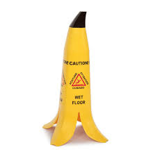

Good example
As we can see in the image, without reading what is written in this wet floor sign, it is immediately noticed that the floor is slippery in that place. This is because, a banana on the floor is related to the cartoons slipping on them.

Bad example
Connect USB connectors to the respective ports. The user has to look to see the correct way to connect both components, or experiment until he succeeds. One solution would be to place a flashy arrow on the port and on the connector to know the correct fit.